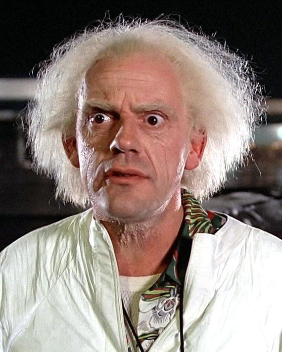
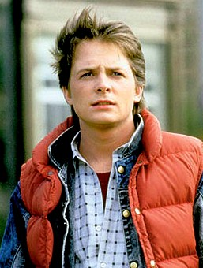
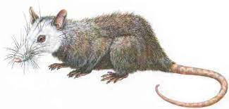

Paleocene
66Ma-56Ma
My name is Doctor Emmett Brown and Great Scott! I can hardly contain my excitement! You won't believe what I've just discovered! I've managed to retrofit the time machine to travel all the way back to the Paleocene period, some 66 million years ago! Can you imagine what it will be like to see the world as it was back then? The sights, the sounds, the creatures! It's like a dream come true for any time-traveling scientist like myself. Of course, we have to be careful. The Paleocene was a time of great change on Earth, with massive geological shifts and the extinction of the dinosaurs. But that's all the more reason to go! To see firsthand the incredible power of nature, and to understand how our planet has evolved over millions of years. It's not just about the adventure, you know. There's so much we can learn from the past, and so much we can apply to the present and the future. Who knows what insights we might gain from a journey to the Paleocene?But enough talk. It's time to fire up the time machine and see what wonders await us in the distant past. Are you ready to come along for the ride? Let's go back to the future! Or, rather, back to the Paleocene!
Our Research Team
Dr.Emmett Brown
Marty McFly
Einstein
Plate Techtonics
Significant events of the Paleocene
Using a special camera Marty had picked up from the future, I was able to view a flat image of the Earth during the Paleogene. This image showed me how continents were forming at the time and helped show me the plate tectonics during the time.
In my discoveries, I have learned that during the Paleogene, Australia had started to separate away from Antarctica. It started to move towards Southeast Asia at this time once it disconnected from Antartica. All continents at this time showed the trend of drifting close to their spots that they are today. Also during this time, India was colliding with Asia forming what are known as the Himalayas. Then I also noticed how the Atlantic Ocean was continuing to widen, just by a few centimeters, but this was only happening little by little each year. Then in Europe, Africa was starting to move towards Europe, forming the Mediterranean Sea. Finally in America, North and South America were starting to move closer together and would eventually form the Isthmus of Panama. Connecting the two continents together allows for animals to migrate across the Isthmus of Panama. Then in North America the Laramide orogeny was occuring forming the Rocky Mountains.
This Plate techtonic data will be revolutionary once we return!
Atmosphere
The composition of the atmosphere
Flying the delorean to the atmosphere, We took readings of the composition of the atmosphere. As we wanted to know if the composition was safe for Einstein to breathe. What we found is that c02 levels were in the 1000 to 1400 ppm, making it much higher than it is today being around 410 ppm. There also was a higher concentration of greenhouse gasses, with higher levels of methane and water vapors. This is most likely the cause for the warmer temperatures and humid climate. The composition was safe for us to beathe, however with c02 levels higher than they are today. This would mean that most likly we would have to take deeper breathes to not get dizzy.

Temperature
The temperature of the Earth
From our readings of the composition of the atmosphere, we knew that greenhouse gasses and c02 levels were higher than current day levels. This caused the temperature to be higher than it is today, however this does cause concern. If c02 and greenhouse gasses levels continue to rise in present time, it calls for a future we can't fix.
Now that’s heavy!
- Data Recorded from a device I left behind to record the tempature throughout time.
From our on ground temperature readings we found that in the Paleocene, temperatures were 5 to 8 degrees C or 9 to 14 F warmer than today. This warming came from not only the greenhouse effect, but from the Paleocene–Eocene thermal maximum. The thermal maximum was the time that the earth was 5 to 8 degrees warmer. This time was caused by the increase in volcanism and uplift from the north atlantic igneous province. This caused drastic changes in the carbon cycle, adding on to the rise in temperature. This thermal maximum lasted around 200,000 years until the carbon started to be transported to the deep ocean allowing for recovery.
Biosphere
The composition of the biosphere
Einstein was the most curious with the wildlife around us, as the animals he usually sees look similar yet are different. For millions of years, reptiles had ruled the earth. Until the asteroid struck, causing life to drastically change, killing off all non avian dinosaurs. Mammals being the smaller
groups of life at the time were able to survive and thrive in the new era.
Mammals- Many mammals of the Paleocene were small rodent-like creatures. This group was the most adaptable and abundant. As they lived in trees, underground, near the water and the deserts. It wasn’t until time went on in the paleocene did they start to grow larger and become the dominating species.
These groups were
 Monotremes platypus-like creatures
Monotremes platypus-like creatures
Marsupials - mammals that would be raised in pouches of the mother
Placentals - being the most diverse group of mammals that ranged from hoofed ungulates, primates, and carnivores.
Terror Birds
- A group of carnivorous birds known as Phorusrhacidae, diversified into 25 different species. These Birds ranged from 1-3 meters tall and had razor sharp beaks for hunting. These would be similar to raptor birds we have today. These birds had strong legs that could potentially crack open their prey and large curved claws. Today these birds have one last living relative known as seriemas.
On second thought, we should get back to the future before they hunt us down!
Cite
https://www.britannica.com/science/Paleocene-Eocene-Thermal-Maximum https://www.geologypage.com/2014/04/paleocene-epoch.html https://en.wikipedia.org/wiki/Paleocene%E2%80%93Eocene_Thermal_Maximum#Recovery https://a-z-animals.com/blog/paleogene-period-animals-when-it-happened-and-major-events/ https://www.geologypage.com/2014/04/paleogene-period.html https://research.amnh.org/paleontology/perissodactyl/concepts/deep-time/paleocene https://education.nationalgeographic.org/resource/age-earth/